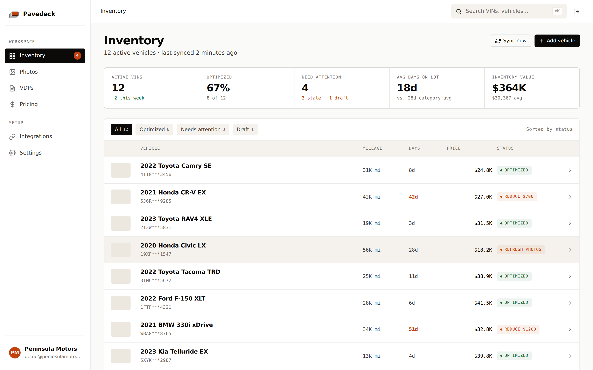
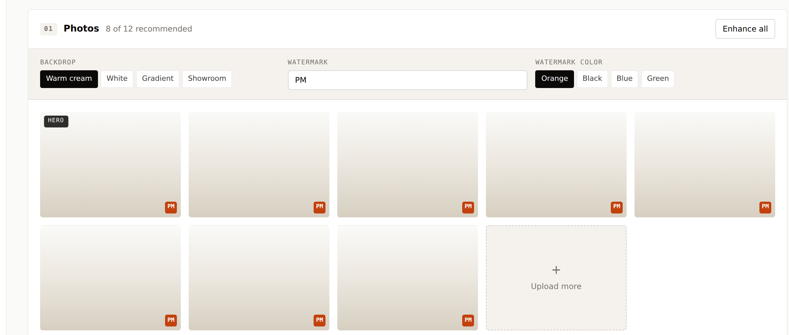
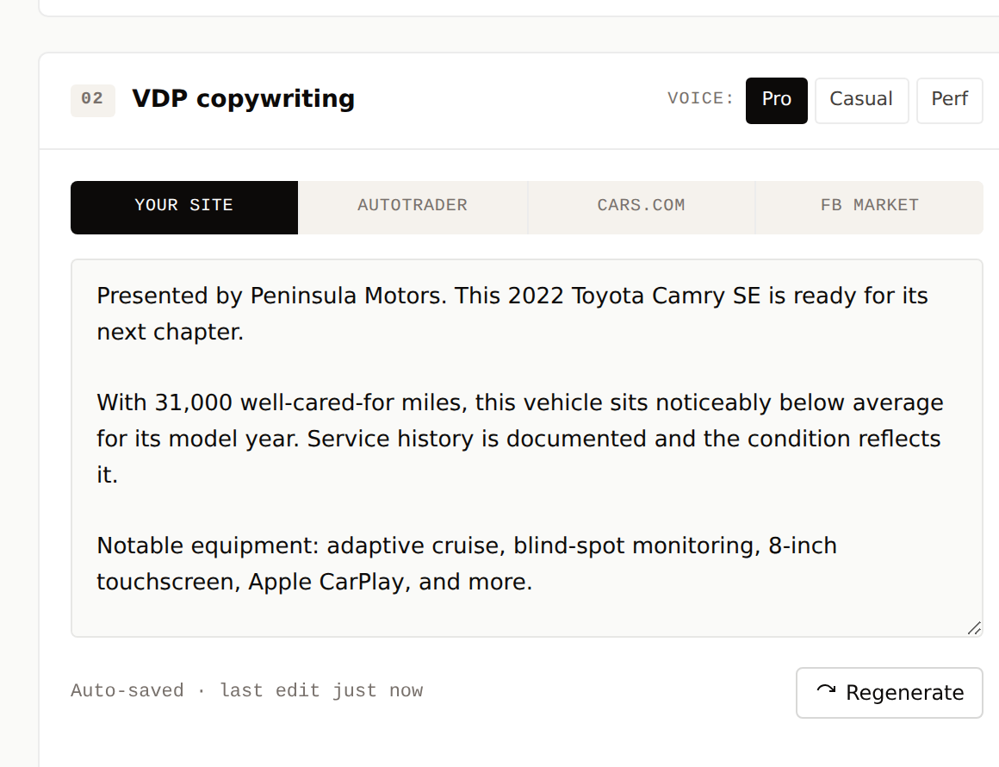
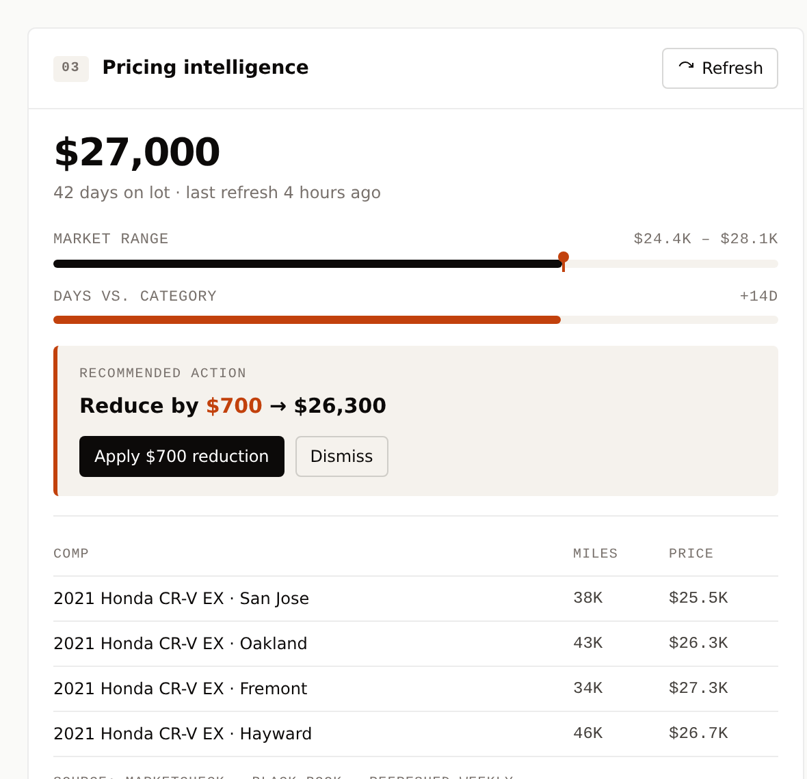

Three things, done right.
Pavedeck does three jobs the existing stack does badly or doesn't do at all: photo enhancement, AI-written VDPs, and pricing intelligence. Each runs automatically on every new VIN. Each pushes its output back into the systems you already use.

Every active VIN, every status, every recommended action — in one view. Filter by attention needed, click into any vehicle, push updates to your channels.
Phone shots in. Dealership-grade photos out.
A vehicle with 8–12 quality photos performs measurably better on every channel — AutoTrader, Cars.com, CarGurus, Facebook Marketplace, your own site. Most independent dealer listings have 3–6 photos taken in mixed lighting against whatever's behind the car.
Pavedeck takes the raw phone shots your team takes on the lot and runs each through a configurable enhancement pipeline. Background removal. Replacement with a consistent backdrop you choose (your indoor showroom, a clean lot, an abstract gradient — your call). Color correction. Branded watermark in the corner. Standardized framing across every vehicle.
You configure the templates once during setup. Every new VIN gets the treatment automatically. Your photographer keeps doing what they do; the output gets dramatically better without changing a single workflow on your end.
Where this fits in your stack: Pavedeck reads photos from your IMS or DMS (or you upload directly). Enhanced photos push back to your website, AutoTrader feed, Cars.com feed, Facebook Marketplace, and any other syndication endpoint your existing syndicator handles.

VDPs that read like a human wrote them. At inventory speed.
Vehicle description pages are the silent conversion lever almost no independent dealer optimizes. The default move — paste the VIN-decoded factory description and call it done — leaves real money on the table. The fix is writing 200–400 words of customer-relevant copy per vehicle, tuned to the channel, refreshed when the vehicle goes stale. Nobody has time for that. Pavedeck does it automatically.
For every new VIN, Pavedeck pulls the decoded factory data, your photos, your dealer notes, and any comparable historical inventory you've sold. It generates a customer-ready VDP in under 60 seconds: feature highlights worth calling out, common buyer concerns addressed proactively, your dealership voice consistently applied, your service area named where it matters for SEO.
Critically, the copy varies by channel. AutoTrader rewards detail and structured features; Facebook Marketplace rewards short scannable copy; your own website rewards depth and SEO-tuned formatting. Same source data, three different outputs, all auto-generated.
The AI search angle: Increasingly, used car shoppers research vehicles via ChatGPT, Perplexity, and Gemini before clicking through to dealer sites. Generic VIN-decoded copy gets ignored by these engines. Properly structured, intent-relevant VDP copy gets cited and surfaced. Pavedeck writes for both human and AI readers.

The vAuto signal without the vAuto bill.
vAuto's pricing analytics are genuinely good. They're also $1,500–3,000/month and bundled with stuff you may not need. Pavedeck delivers competitive pricing intelligence using licensed market data — MarketCheck, Black Book, KBB feeds — at a fraction of the cost.
Every vehicle in your inventory gets a weekly pricing read against live comps in your market: same year/make/model/trim, similar mileage and condition, within your geographic radius. Pavedeck surfaces the recommended price band, flags vehicles priced above market, and identifies vehicles sitting too long that need a strategic adjustment.
You stay in control. Pavedeck doesn't auto-adjust your prices — it surfaces the recommendation and lets your used car manager make the call. Most dealers don't want full automation here, and the ones who do can configure auto-adjust rules with explicit margin floors.
What we do not do: we do not scrape your competitors or build pricing from gray-area data. All pricing intelligence comes from licensed sources. This matters for legal reasons and it matters because your used car manager has to defend pricing decisions to ownership — they need defensible data, not anonymous web-scraped numbers.

What Pavedeck doesn't try to be.
We're explicit about scope because dealers have been burned by all-in-one platforms that did everything badly. Pavedeck does three things very well and integrates with everything else.
-
Inventory managementKeep using vAuto, HomeNet, DealerCenter, Frazer, AutoManager — whatever you have. Pavedeck reads from it.
-
DMSCDK, Reynolds, Dealertrack — Pavedeck doesn't replace these. It plugs into the inventory feed they generate.
-
Website / DXPDealer.com, DealerOn, your custom site — Pavedeck pushes enhanced inventory content into whatever you use.
-
SyndicationYour existing syndicator (HomeNet, vAuto, Dealer Specialties) handles the push to AutoTrader/Cars.com. We hand them better content.
-
CRM / leadsVinSolutions, DealerSocket, Elead — Pavedeck doesn't touch the customer relationship layer.
30 days free. No credit card. Self-serve setup in about 20 minutes.